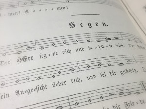

by Mr. Jonathan Swett
 Numerous
treasures of the current body of Lutheran hymnody arose in the
Reformation period, the chief contributor of which was Martin
Luther. Several of these hymns have been explored over the
course of this blog in anticipation of the 500th anniversary
of the Reformation! Although “Come, Holy Ghost, God and
Lord” is not commonly associated with the hymns of Luther
referred to as the catechetical chorales, one can easily make a
connection between the text of this particular hymn and part of Luther’s
Small Catechism. At the least, it holds to Luther’s
paradigm that music and hymns should be a means of delivering an
objective truth of Scripture and, in the best examples, also
teach the Christian faith!
Numerous
treasures of the current body of Lutheran hymnody arose in the
Reformation period, the chief contributor of which was Martin
Luther. Several of these hymns have been explored over the
course of this blog in anticipation of the 500th anniversary
of the Reformation! Although “Come, Holy Ghost, God and
Lord” is not commonly associated with the hymns of Luther
referred to as the catechetical chorales, one can easily make a
connection between the text of this particular hymn and part of Luther’s
Small Catechism. At the least, it holds to Luther’s
paradigm that music and hymns should be a means of delivering an
objective truth of Scripture and, in the best examples, also
teach the Christian faith!
In both the one- and three-year lectionary, “Come, Holy Ghost, God and Lord” is the appointed Hymn of the Day for the Day of Pentecost. In not unusual fashion, Luther crafted this chorale out of something already in existence; in this case, an 11th century Latin antiphon for the Vigil of Pentecost, “Veni Sancte Spiritus: repletuorum corda fidelium.” Out of this antiphon arose a German stanza, “Komm, Heiliger Geist, Herre Gott,” which has pre-Reformation origins in 15th century manuscripts and was popular in Luther’s day. He was so fond of the antiphon, in fact, that he writes in his Table Talk: “The hymn ‘Come Holy Ghost, God and Lord,’ was composed by the Holy Ghost himself, both words and music.” Luther crafted the version known today by polishing the original German stanza and also composing two additional stanzas to fit masterfully with the first. The whole was first published in the Erfurt Enchiridia and in Johann Walter’s Geystliche gesangk Buchleyn, both in 1524. The tune Komm, Heiliger Geist, Herre Gott—a simplified adaptation of the melody that accompanied the original German antiphon—appeared with Luther’s text in these publications.

I believe that I cannot by my own reason or strength believe in Jesus Christ, my Lord, or come to Him; but the Holy Spirit has called me by the Gospel, enlightened me with His gifts, sanctified and kept me in the true faith.
“With all Your graces now outpoured on each believer’s mind and heart” (stanza 1)
In the same way He calls, gathers, enlightens, and sanctifies the whole Christian church on earth, and keeps it with Jesus Christ in the one true faith.
“Lord, by the brightness of Your light in holy faith Your Church unite” (stanza 1)
“Let none but Christ our master be that we in living faith abide, in Him, our Lord, with all our might confide.” (stanza 2)
In this Christian church He daily and richly forgives all my sins and the sins of all believers.
“From every error keep us free” (stanza 2)
On the Last Day He will raise me and all the dead, and give eternal life to me and all believers in Christ.
“That bravely here we may contend, through life and death to You, our Lord, ascend.” (stanza 3)
As mentioned earlier that the best hymns also teach the Christian faith, it is worth noting that this chorale actually predates the publication of Luther’s Small Catechism (1529). Thanks be to God for this chorale’s expression of our Lutheran faith and His work through the third Person of the Holy Trinity!
Almighty and ever-living God, You fulfilled Your promise by sending the gift of the Holy Spirit to unite disciples of all nations in the cross and resurrection of Your Son, Jesus Christ. By the preaching of the Gospel spread this gift to the ends of the earth; through the same Jesus Christ, our Lord, who lives and reigns with You and the Holy Spirit, one God, now and forever. Amen. (Collect for Pentecost Eve)
Jonathan A. Swett is Kantor of Our Savior Evangelical Lutheran Church and School, Hartland, Michigan.
Bibliography:
Precht, Fred. Lutheran Worship: Hymnal Companion. St. Louis: Concordia Publishing House, 1992.
Stulken, Marilyn Kay. Hymnal Companion to the Lutheran Book of Worship. Philadelphia: Fortress Press, 1981.

.jpg)

{kind=link}
{kind=link}
{kind=link}
{kind=link}
{kind=link}